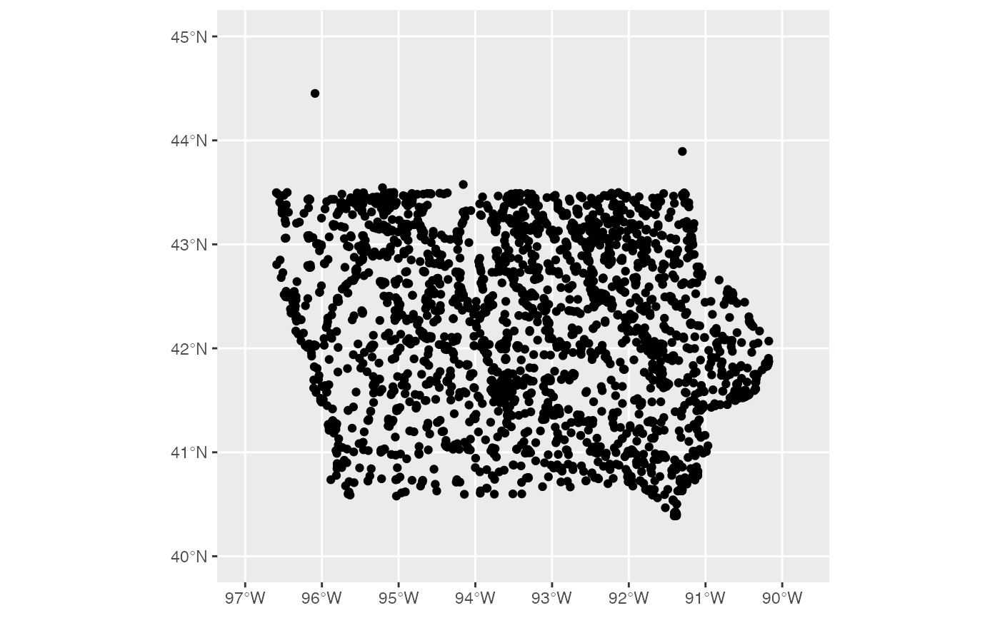

ia_features.RdThis dataset consists of all named physical and cultural geographic features in Iowa that are part of the Geographic Names Information System (GNIS) as developed by the US Geological Survey. The data was downloaded from the Iowa Data Portal in July 2020. It encompasses various aspects of Iowa's infrastructure, including hospital buildings and parks.
ia_features
A data frame with 40,473 rows and 11 variables:
Official feature name as defined in INCITS 446-2008.
Type of feature, one of Airport, Arch, Area, Bar, Bay, Beach, Bend, Bridge, Building, Canal, Cape, Cemetery, Census, Channel, Church, Civil, Cliff, Crossing, Dam, Falls, Flat, Forest, Gut, Harbor, Hospital, Island, Lake, Levee, Locale, Military, Mine, Oilfield, Park, Pillar, Plain, Populated Place, Post Office, Range, Reserve, Reservoir, Ridge, School, Spring, Stream, Summit, Swamp, Tower, Trail, Tunnel, Valley, and Woods..
state abbreviation
County of the primary location of the feature.
Elevation in meters above sea level of the feature.
Elevation in feet above sea level of the feature.
Name of the location of the building
Date that the feature was added to the database
Date at which the record was last updated
sf point object of geographic location
https://data.iowa.gov/Physical-Geography/Iowa-Physical-and-Cultural-Geographic-Features/uedc-2fk7
library(dplyr) library(ggplot2) ia_features %>% filter(class == "Park") %>% ggplot() + geom_sf() + xlim(c(-97,-89.75)) + ylim(c(40, 45))# The Bridges of Madison County library(leaflet) library(sf) ia_features %>% filter(county == "Madison", class == "Bridge") %>% leaflet() %>% addTiles() %>% setView(-94.0530854, 41.3409121, zoom = 9) %>% # addPolygons(data = ia_counties, # weight = 1, color="#333333") %>% addCircleMarkers(radius = 1, stroke = 0.1, label=~name) # Leaflet map of top ten feature maps in Iowa topten <- ia_features %>% count(class) %>% arrange(desc(n)) %>% head(10)#>#>#>#>#>#>#>#>#>#>#>#>#>#>#>#>#>#>#>#>#>#>#>#>#>#>#>#>#>#>#>#>#>#>#>#>#>#>#>#>#>#>#>#>#>#>#>#>#>#>#>pal <- colorFactor( palette=RColorBrewer::brewer.pal(n=10, name="Paired"), domain = topten$class ) ia_features %>% filter(class %in% topten$class) %>% leaflet() %>% addTiles() %>% setView(-94, 42, zoom = 6) %>% addPolygons(data = ia_counties, weight = 1, color="#333333") %>% addCircleMarkers(radius = .5, stroke = 0.1, color =~pal(class), label=~class) %>% addLegend(pal = pal, values = topten$class) # Iowa is flat. Is it? Yes, but ... elev_pal <- colorNumeric( palette="Blues", domain = c(0,600), reverse=TRUE ) ia_features %>% filter(class %in% topten$class) %>% leaflet() %>% addTiles() %>% setView(-94, 42, zoom = 6) %>% addPolygons(data = ia_counties, weight = 1, color="#333333") %>% addCircleMarkers(radius = .5, stroke = 0.1, color =~elev_pal(elevation_m), label=~name) %>% addLegend(pal=elev_pal, values=c(0,600))